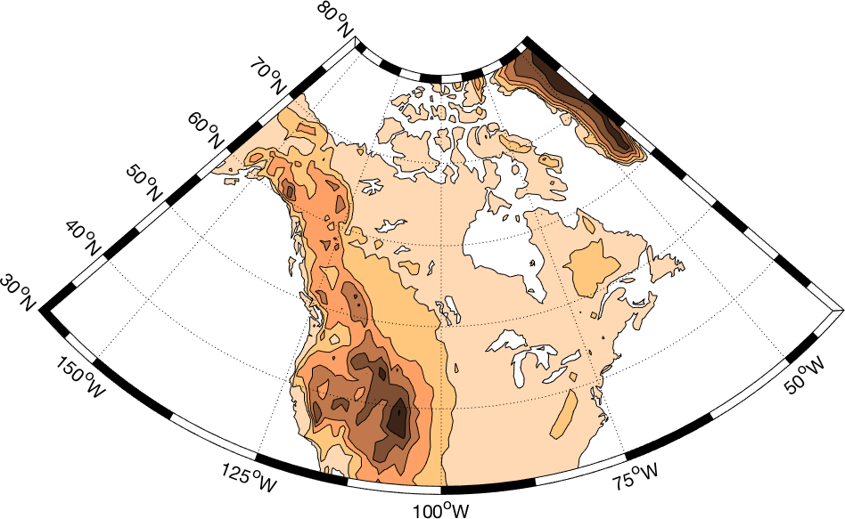
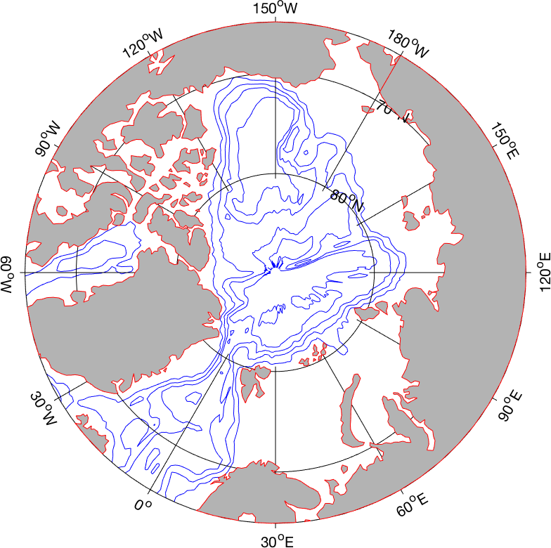
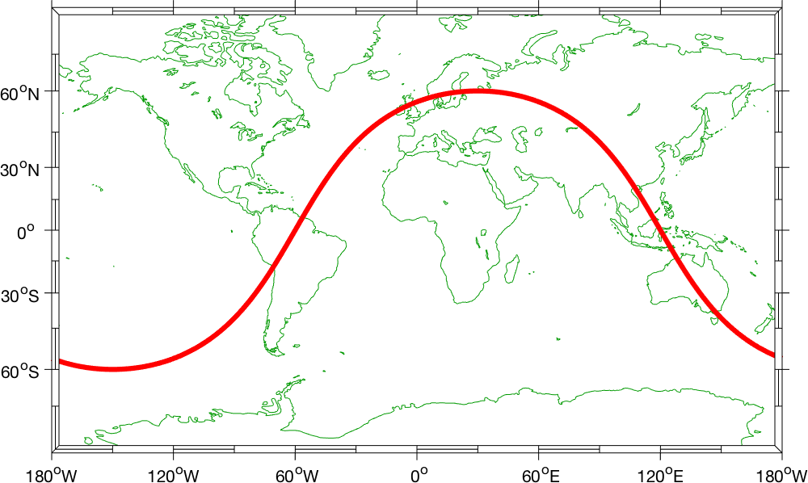
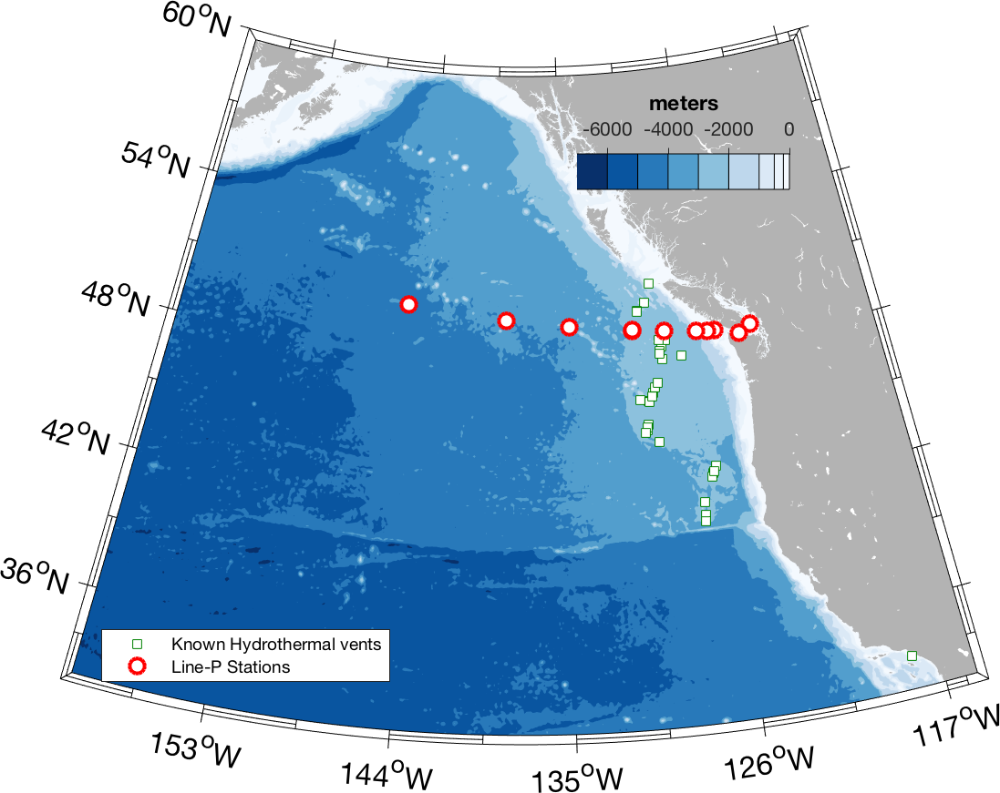
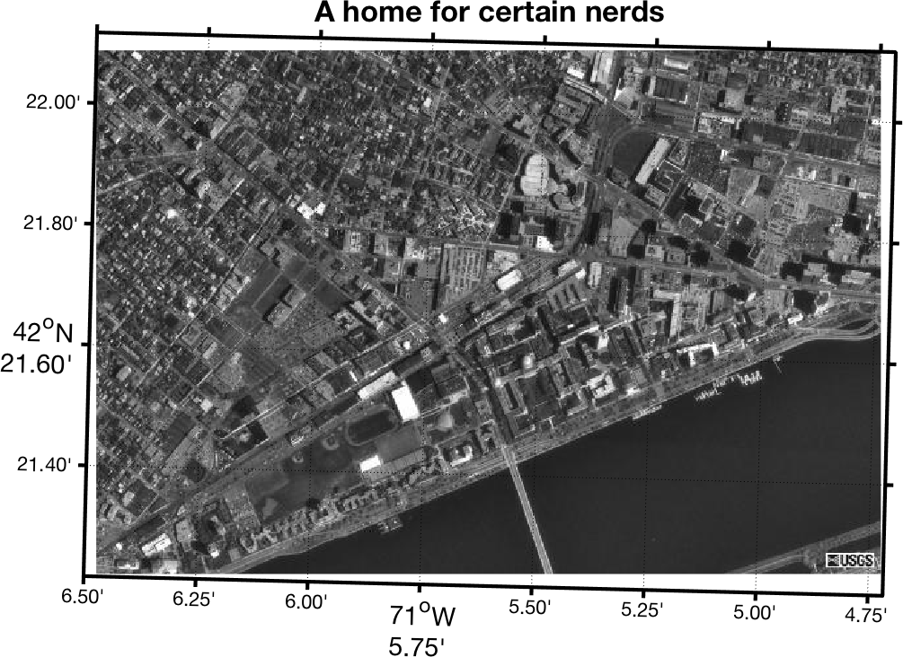
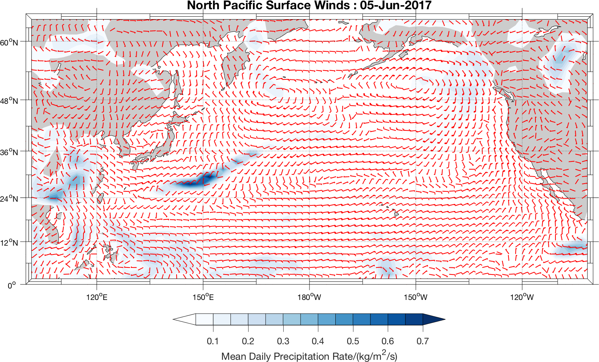

M_Map:
A mapping package for Matlab
You have collected your data, loaded it into Matlab, analyzed everything to death, and now you want to make a simple map showing how it relates to the world.
But you can't.
Instead you have to figure out how to save all your data, and then read it into another program (like, for example GMT), and then spend all that extra time figuring out why it doesn't give you what you expected it would...or you can invest in Matlab's own mapping toolbox (with a similarly steep learning curve)... or not!
Announcing M_Map v1.4i!
(released Dec/2017)
M_Map is a set of mapping tools written for Matlab (it also works under Octave). M_Map includes:
- Routines to project data in 19 different projections (and determine inverse mappings), using spherical and ellipsoidal earth-models.
- A grid generation routine to make nice axes with limits either in lat/long terms or in planar X/Y terms.
- A coastline database (with 1/4 degree resolution).
- A global elevation database (1 degree resolution).
- Hooks into freely available high-resolution coastline and bathymetry databases.
- Other useful stuff.
Gallery
|
|
 |  | 
|

|
|  | 
|

|

|

|

|

|

|

|
 |

| 
|
 | 
|
 |
 |
 |
How to get M_Map
You can download the M_Map toolbox either as a gzipped tar-file , or as zip archive (Click on these links to download). If you are unpacking the zip file MAKE SURE YOU ALSO UNPACK SUBDIRECTORIES! Both are around 650k in size. Once you have this archive, read the Getting started section of the User's guide to correctly install this toolbox, and sections 8.6 and 9.3 to install ETOPO1 and GSHHS respectively.
A number of examples are available to highlight the various capabilities of M_Map (thumbnails are shown above).
M_Map is a programming toolbox. However, you can also explore mapping using MAP-LAB, a a MATLAB-based Graphical User Interface (GUI) designed to produce maps and visualize data sets related to geodetic, geophysical and oceanographic applications, which is built on top of M_Map. MAP_Lab is available here.
Release Notes
New in release 1.4i:
- Finally sorted out the major "2014b and later matlab graphics engine" related problems with
m_grid, as well as many minor graphics improvements. -
m_windbarbandm_streamlinefor meteorologists, alsom_scatter. - A set of useful colourmaps in
m_colmap, including a perceptually uniform "jet-like" colourmap. - A colourbar function
m_contfbarmade to work withcontourfplots. -
m_annotationandwysiwygto help you add arrows and things. - Updated the documentation so it doesn't have that "1990s" look.
- Added link to a Chinese translation of the Users Guide, as well as to the mapping GUI MAP-LAB which is built on top of M_Map.
- List of coded examples updated, and a few new ones added.
New in release 1.4h are
- ETOPO2v2 and ETOPO1 support.
- Handled some warnings about BITMAX that arise in Matlab 2014b. Note - I have only been able to fix or workaround SOME of the really bad bugs in 2014b. Use with caution (or better yet don't use). EPS output in particular is really awful, even if the screen plot looks "nice". Fortunately mathworks "may consider fixing this in future releases".
- Added option to output national+state or national borders only in
m_gshhs.
New in release 1.4g are
m_ellipse.mto plot tidal ellipses (say, from T_Tide )- Option to use either decimal-degrees or degrees/decimal-minutes in grid axis labels
- Matlab 2013b has a bad bug in the
dataaspectratioaxes property that affects pretty much everything graphical. This version of M_Map has a workaround that MOSTLY works, but it would be better to avoid using 2013b.
New in release 1.4f are
m_shaperead.mto read SHAPEFILES! (so Natural Earth can be used for political boundaries instead of DCW, among other opportunities)- gshhs version 2 support
- partial OCTAVE compatibility
New in release 1.4e are
- GSHHS Now comes with the WDB rivers and borders database, and
links to them have been added via
m_gshhs.m - Ellipsoidal Albers and Lambert conic projections included
New in release 1.4d are
- Modifications to work around bugs in matlab7
contourf - Robinson projection
- A few compatibility issues with current matlab versions
- Upgraded hooks into some databases.
New in release 1.4b are
- m_hatch for hatched and speckled patches
- old-fashioned speckled coastlines (good for B&W pics - see Example 13).
- m_lldist now also returns points on great circle geodesics.
m_fdist, m_idist, andm_geodesicfor geodesics on an ellipsoidal earth.
New in release 1.4 are
m_pcolorm_coord(to allow for geographic and geomagnetic coordinate systems)- A very few minor bug fixes.
- Some hints about and examples of adding satellite image data to your maps.
Example Code
1. M_Map Logo
m_proj('ortho','lat',48','long',-123');
m_coast('patch','r');
m_grid('linest','-','xticklabels',[],'yticklabels',[]);
patch(.55*[-1 1 1 -1],.25*[-1 -1 1 1]-.55,'w');
text(0,-.55,'M\_Map','fontsize',25,'color','b',...
'vertical','middle','horizontal','center');

2. Lambert Conformal Conic projection of North American Topography
m_proj('lambert','long',[-160 -40],'lat',[30 80]);
m_coast('patch',[1 .85 .7]);
m_elev('contourf',[500:500:6000]);
m_grid('box','fancy','tickdir','in');
colormap(flipud(copper));
3. Stereographic projection of North Polar regions
% Note that coastline is drawn OVER the grid because of the order in which
% the two routines are called
m_proj('stereographic','lat',90,'long',30,'radius',25);
m_elev('contour',[-3500:1000:-500],'edgecolor','b');
m_grid('xtick',12,'tickdir','out','ytick',[70 80],'linest','-');
m_coast('patch',[.7 .7 .7],'edgecolor','r');
4. Two Interrupted Projections of the World's Oceans
subplot(211);
Slongs=[-100 0;-75 25;-5 45; 25 145;45 100;145 295;100 290];
Slats= [ 8 80;-80 8; 8 80;-80 8; 8 80;-80 0; 0 80];
for l=1:7
m_proj('sinusoidal','long',Slongs(l,:),'lat',Slats(l,:));
m_grid('fontsize',6,'xticklabels',[],'xtick',[-180:30:360],...
'ytick',[-80:20:80],'yticklabels',[],'linest','-','color',[.7 .7 .7]);
m_coast('patch','g');
end
xlabel('Interrupted Sinusoidal Projection of World Oceans');
% In order to see all the maps we must undo the axis limits set by m_grid calls:
set(gca,'xlimmode','auto','ylimmode','auto');
subplot(212);
Slongs=[-100 43;-75 20; 20 145;43 100;145 295;100 295];
Slats= [ 0 90;-90 0;-90 0; 0 90;-90 0; 0 90];
for l=1:6
m_proj('mollweide','long',Slongs(l,:),'lat',Slats(l,:));
m_grid('fontsize',6,'xticklabels',[],'xtick',[-180:30:360],...
'ytick',[-80:20:80],'yticklabels',[],'linest','-','color','k')
m_coast('patch',[.6 .6 .6]);
end
xlabel('Interrupted Mollweide Projection of World Oceans');
set(gca,'xlimmode','auto','ylimmode','auto');

5. Oblique Mercator Projection with quiver and contour data
%% Nice looking data [lon,lat]=meshgrid([-136:2:-114],[36:2:54]); u=sin(lat/6);
v=sin(lon/6); m_proj('oblique','lat',[56 30],'lon',[-132 -120],'aspect',.8); subplot(121); m_coast('patch',[.9 .9 .9],'edgecolor','none'); m_grid('tickdir','out','yaxislocation','right',... 'xaxislocation','top','xlabeldir','end','ticklen',.02); hold on; m_quiver(lon,lat,u,v); xlabel('Simulated surface winds'); subplot(122); m_coast('patch',[.9 .9 .9],'edgecolor','none');
m_grid('tickdir','out','yticklabels',[],... 'xticklabels',[],'linestyle','none','ticklen',.02); hold on; [cs,h]=m_contour(lon,lat,sqrt(u.*u+v.*v)); clabel(cs,h,'fontsize',8); xlabel('Simulated something else');

6. Miller Projection with Great Circle
% Plot a circular orbit
lon=[-180:180];
lat=atan(tan(60*pi/180)*cos((lon-30)*pi/180))*180/pi;
m_proj('miller','lat',82);
m_coast('color',[0 .6 0]);
m_line(lon,lat,'linewi',3,'color','r');
m_grid('linestyle','none','box','fancy','tickdir','out');
7. Lambert Conformal Projection with high-resolution bathymetry of Western Mediterranean
m_proj('lambert','lon',[-10 20],'lat',[33 48]);
[CS,CH]=m_tbase('contourf',[-5000:500:3000],'edgecolor','none');
m_grid('linestyle','none','tickdir','out','linewidth',3);
colormap([ m_colmap('blues',40); m_colmap('greens',24)]);
brighten(.5);
ax=m_contfbar(1,[.5 .8],CS,CH);
title(ax,{'Level/m',''}); % Move up by inserting a blank line

8. Demonstration of fancy vectors
m_vec; % See code in m_vec.m for details

9. Zoom in on Prince Edward Island to show different coastline resolutions
% Example showing the default coastline and all of the different resolutions
% of GSHHS coastlines as we zoom in on a section of Prince Edward Island.
clf
axes('position',[.35 .6 .37 .37]);
m_proj('albers equal-area','lat',[40 60],'long',[-90 -50],'rect','on');
m_coast('patch',[0 1 0]);
m_grid('linestyle','none','linewidth',2,'tickdir','out',...
'xaxisloc','top','yaxisloc','right','fontsize',6);
m_text(-69,51,'Standard coastline','color','r','fontweight','bold');
m_ruler([.5 .9],.8,3,'fontsize',8)
axes('position',[.09 .5 .37 .37]);
m_proj('albers equal-area','lat',[40 54],'long',[-80 -55],'rect','on');
m_gshhs_c('patch',[.2 .8 .2]);
m_grid('linestyle','none','linewidth',2,'tickdir','out',...
'xaxisloc','top','fontsize',6);
m_text(-80,52.5,'GSHHS\_C (crude)','color','m','fontweight','bold');
m_ruler([.5 .9],.8,2,'fontsize',8);
axes('position',[.13 .2 .37 .37]);
m_proj('albers equal-area','lat',[43 48],'long',[-67 -58],'rect','on');
m_gshhs_l('patch',[.4 .6 .4]);
m_grid('linestyle','none','linewidth',2,'tickdir','out','fontsize',6);
m_text(-66.5,43.5,'GSHHS\_L (low)','color','m','fontweight','bold');
m_ruler([.5 .9],.8,3,'fontsize',8);
axes('position',[.35 .05 .37 .37]);
m_proj('albers equal-area','lat',[45.8 47.2],'long',[-64.5 -62],'rect','on');
m_gshhs_i('patch',[.5 .6 .5]);
m_grid('linestyle','none','linewidth',2,'tickdir','out',...
'yaxisloc','right','fontsize',6);
m_text(-64.4,45.9,'GSHHS\_I (intermediate) ','color','m',...
'fontweight','bold','horizontalalignment','right');
m_ruler([.5 .8],.1,3,'fontsize',8);
axes('position',[.5 .1 .37 .37]);
m_proj('albers equal-area','lat',[46.375 46.6],'long',[-64.2 -63.7],'rect','on');
m_gshhs_h('patch',[.6 .7 .6]);
m_grid('linestyle','none','linewidth',2,'tickdir','out',...
'xaxisloc','top','yaxisloc','right','fontsize',6);
m_text(-64.18,46.4,'GSHHS\_H (high)','color','m','fontweight','bold');
m_ruler([.5 .8],.2,3,'fontsize',8);
axes('position',[.55 .35 .37 .37]);
m_proj('albers equal-area','lat',[46.55 46.65],'long',[-63.97 -63.77],'rect','on');
m_gshhs_f('patch',[.7 .9 .7]);
m_grid('linestyle','none','linewidth',2,'tickdir','out',...
'xaxisloc','top','yaxisloc','right','fontsize',6);
m_text(-63.95,46.56,'GSHHS\_F (full)','color','m','fontweight','bold');
m_ruler([.5 .8],.2,3,'fontsize',8);
10. Tracklines and UTM projection
m_proj('UTM','long',[-72 -68],'lat',[40 44]);
m_gshhs_i('color','k');
m_grid('box','fancy','tickdir','in');
m_ruler(1.2,[.5 .8]);
% fake up a trackline
lons=[-71:.1:-67];
lats=60*cos((lons+115)*pi/180);
dates=datenum(1997,10,23,15,1:41,zeros(1,41));
m_track(lons,lats,dates,'ticks',0,'times',4,'dates',8,...
'clip','off','color','r','orient','upright');

11. Range rings
m_proj('hammer','clong',170);
m_grid('xtick',[],'ytick',[],'linestyle','-');
m_coast('patch','g');
m_line(100.5,13.5,'marker','square','color','r');
m_range_ring(100.5,13.5,[1000:1000:15000],'color','b','linewi',2);
xlabel('1000km range rings from Bangkok');
12. Speckled boundary
bndry_lon=[-128.8 -128.8 -128.3 -128 -126.8 -126.6 -128.8];
bndry_lat=[49 50.33 50.33 50 49.5 49 49];
clf;
m_proj('lambert','long',[-130 -121.5],'lat',[47 51.5],'rectbox','on');
m_gshhs_i('color','k'); % Coastline...
m_gshhs_i('speckle','color','k'); % with speckle added
m_line(bndry_lon,bndry_lat,'linewi',2,'color','k'); % Area outline ...
m_hatch(bndry_lon,bndry_lat,'single',30,5,'color','k'); % ...with hatching added.
m_grid('linewi',2,'linest','none','tickdir','out','fontsize',12);
title('Speckled Boundaries for nice B&W presentation','fontsize',14);
m_text(-128,48,5,{'Pacific','Ocean'},'fontsize',18);
13. Blue Ocean
m_proj('miller','lat',[-77 77]);
m_coast('patch',[.7 1 .7],'edgecolor','none');
m_grid('box','fancy','linestyle','-','gridcolor','w','backcolor',[.2 .65 1]);
cities={'Cairo','Washington','Buenos Aires'};
lons=[ 30+2/60 -77-2/60 -58-22/60];
lats=[ 31+21/60 38+53/60 -34-45/60];
for k=1:3
[range,ln,lt]=m_lldist([-123-6/60 lons(k)],[49+13/60 lats(k)],40);
m_line(ln,lt,'color','r','linewi',2);
m_text(ln(end),lt(end),sprintf('%s - %d km',cities{k},round(range)));
end;
title('Great Circle Routes','fontsize',14,'fontweight','bold');
set(gcf,'color','w'); % Need to do this otherwise 'print' turns the lakes black
14. Stepped jet colormap
% get delta-SA data from the TEOS-10 gsw atlas at 2500 dbar
[LG,LT]=meshgrid(0:360,-86:89);
dSA=ones(size(LG));
dSA(:)=gsw_deltaSA_atlas(3000*dSA(:),LG(:),LT(:));
% Rearrange data to lie in the longitude limits I give for the
% projection
ind=[31:361 1:30]; % Move left side to right
dSA=dSA(:,ind);
LT=LT(:,ind);
LG=LG(:,ind);LG(LG<30)=LG(LG<30)+360; %...and add 360 to some longitudes
clf;
m_proj('robinson','lon',[30 390]);
m_pcolor(LG,LT,dSA*1000);
m_coast('patch',[.7 .7 .7],'edgecolor','none');
m_grid('tickdir','out','linewi',2);
% This is a perceptually uniform jet-like color scale, but in m_colmap
% we can add some simple graduated steps to make the pcolor look a little
% more like a contourf
colormap(m_colmap('jet','step',10));
h=colorbar('northoutside');
title(h,'\deltaSA/(g/kg) at 2000 dbar','fontsize',14);
set(h,'pos',get(h,'pos')+[.2 .05 -.4 0],'tickdir','out')
set(gcf,'color','w'); % Need to do this otherwise 'print' turns the lakes black
15. Bathymetry
load /ocean/rich/home/dens14/VENTS
lp=load('/ocean/rich/home/dens14/Linep_201402');
addpath /ocean/rich/home/matlab/cbrewer % The colorbrewer (from MATLAB File Exchange)
m_proj('lambert','long',[-160 -115],'lat',[32 60]);
[CS,CH]=m_etopo2('contourf',[-7000:1000:-1000 -500 -200 0 ],'edgecolor','none');
m_gshhs_f('patch',[.7 .7 .7],'edgecolor','none');
h1=m_line(vents.lon,vents.lat,'marker','s','color',[0 .5 0],...
'linest','none','markerfacecolor','w','clip','point');
h2=m_line(lp.POS(:,2),lp.POS(:,1),'marker','o','color','r','linewi',2,...
'linest','none','markersize',8,'markerfacecolor','w');
m_grid('linest','none','tickdir','out','box','fancy','fontsize',16);
legend([h1(1),h2(1)],'Known Hydrothermal vents','Line-P Stations','location','southwest');
colormap(m_colmap('blues'));
caxis([-7000 000]);
[ax,h]=m_contfbar([.55 .75],.8,CS,CH,'endpiece','no','axfrac',.05);
title(ax,'meters')
set(gcf,'color','w'); % otherwise 'print' turns lakes black
Examples of satellite data manipulation
1. Global SST (or any variable on a global Lat/Long grid)
% NOAA/NASA Pathfinder AVHRR SST product
% http://podaac.jpl.nasa.gov/sst/
[P,map]=imread('../m_mapWK/199911h54ma-gdm.hdf');
% Documentation for the 54km dataset gives
% this formula for temperature
P=0.15*double(P)-3; % deg C
%...and defines this Lat/Long grid for the data
Plat=90-.25-[0:359]*.5;Plon=-180+.25+[0:719]*.5;
% Since the grid is rectangluar in lat/long (i.e. not
% really a projection at all, although it is included in
% m_map under the name 'equidistant cyldindrical'), we
% don't want to use the 'image' technique. Instead...
% Create a grid, offsetting by half a grid point to account
% for the flat pcolor
[Plg,Plt]=meshgrid(Plon-0.25,Plat+0.25);
m_proj('hammer-aitoff','clongitude',-150);
% Rather than rearranging the data so its limits match the
% plot I just draw it twice (you can see the join at 180W
% because of the quirks of flat pcolor) (Note that
% all the global projections have 360 deg ambiguities)
m_pcolor(Plg,Plt,P);shading flat;colormap(map);
hold on;
m_pcolor(Plg-360,Plt,P);shading flat;colormap(map);
m_coast('patch',[.6 1 .6]);
m_grid('xaxis','middle');
% add a standard colorbar.
h=colorbar('h');
set(get(h,'xlabel'),'string','AVHRR SST Nov 1999');
2. SSM/I Ice cover (data provided on a fixed grid) (HDF format)
%Near-Real-Time SSM/I-SSMIS EASE-Grid Daily Global Ice Concentration and
% Snow Extent, Version 5
%
% Brodzik, M. J. and J. S. Stewart. 2016. Near-Real-Time SSM/I-SSMIS EASE-Grid
% Daily Global Ice Concentration and Snow Extent, Version 5. Boulder, Colorado
% USA. NASA National Snow and Ice Data Center Distributed Active Archive Center.
% doi: http://dx.doi.org/10.5067/3KB2JPLFPK3R.
Q=hdfinfo('NISE_SSMISF18_20171124.HDFEOS')
% Q.Attributes(2).Value says
% UpperLeftPointMtrs=(-9036842.762500,9036842.762500)
% LowerRightMtrs=(9036842.762500,-9036842.762500)
% ProjParams=(6371228,0,0,0,0,90000000,0,0,0,0,0,0,0)
% and
% Q.Attributes(3).Value says
% 'Data Value Parameter
% 0 snow-free land
% 1-100 sea ice concentration percentage
% 101 permanent ice (Greenland, Antarctica)
% 102 not used
% 103 dry snow
% 104 wet snow
% 105-251 not used
% 252 mixed pixels at coastlines (unable to reliably apply microwave algorithm)
% 253 suspect ice value
% 254 corners(undefined)
% 255 ocean
P=hdfread('NISE_SSMISF18_20171124.HDFEOS','Northern Hemisphere','fields','Extent');
P(P==255)=105; % Put ocean at top of indices
P(P>105)=0;
% According to web site this is is the projection info. I make te radius
% of my map less than the actual data field though.
m_proj('azimuthal equal-area','latitude',90,'radius',47,'rectbox','on');
clf
% Plot data as an image
offs=9036842.762500/6371228; % Convert projection coords to units of earth radii
image([-offs offs],[offs -offs],P); set(gca,'ydir','normal');
colormap([.2 .5 .2; % 0
jet(100); % 1-100
1 1 1; % Greenland
0 0 0 ;
.9 .9 .9; % dry snow
.8 .8 .8; % wet snow
0 0 .5]); % 105 - now ocean
caxis([0 105]);
m_coast('color','k');
m_grid('linewi',2,'tickdir','out');
title({'SSM/I Ice cover Nov 24, 2017',''},'fontsize',14,'fontweight','bold');
hh=colorbar('h');
set(hh,'tickdir','out');
xlabel(hh,'% Ice cover');
3. Aerial photos on an UTM grid
% This image comes from the TerraServer
% (http://terraserver.microsoft.com/ - now greatly altered)
% and has been georeferenced to UTM coords. The UTM projection
% uses UTM coordinates on the screen (as long as the ellipse
% parameter is set to something other than the default),
[P,map]=imread('../m_mapWK/oncehome.jpeg');
% Set the projection limits to the lat/long of image
% corners.
m_proj('UTM','long',[-71-6/60-30/3600 -71-4/60-43/3600],...
'lat',[42+21/60+13/3600 42+22/60+7/3600],'ellipse','wgs84');
clf;
image([326400 328800],[4692800 4691200],P);set(gca,'ydir','normal');
m_grid('tickdir','out','linewi',2,'fontsize',14);
title('A home for certain nerds','fontsize',16);
4. ;A subset of a global dataset (HDF format)
% Ocean colour data from http://seawifs.gsfc.nasa.gov/SEAWIFS.html
%
% Take a 4km weakly average dataset and plot a map for the Strait of
% Georgia and outer coast. Note that most of this code is used
% for reading in and subsetting the data.
LATLIMS=[47 51];
LONLIMS=[-130 -121];
% Note - This is probably not the most efficient way to read and
% handle HDF data, but I don't usually do this...
%
% First, get the attribute data
PI=hdfinfo('../m_mapWK/A20040972004104.L3m_8D_CHLO_4KM');
% And write it into a structure
pin=[];
for k=1:59
nm=PI.Attributes(k).Name;nm(nm==' ')='_';
if isstr(PI.Attributes(k).Value),
pin=setfield(pin,nm,PI.Attributes(k).Value);
else
pin=setfield(pin,nm,double(PI.Attributes(k).Value));
end
end;
% lon/lat of grid corners
lon=[pin.Westernmost_Longitude:pin.Longitude_Step:pin.Easternmost_Longitude];
lat=[pin.Northernmost_Latitude:-pin.Latitude_Step:pin.Southernmost_Latitude];
% Get the indices needed for the area of interest
[mn,ilt]=min(abs(lat-max(LATLIMS)));
[mn,ilg]=min(abs(lon-min(LONLIMS)));
ltlm=fix(diff(LATLIMS)/pin.Latitude_Step);
lglm=fix(diff(LONLIMS)/pin.Longitude_Step);
% load the subset of data needed for the map limits given
P=hdfread('../m_mapWKA20040972004104.L3m_8D_CHLO_4KM','l3m_data',...
'Index',{[ilt ilg],[],[ltlm lglm]});
% Convert data into log(Chla) using the equations given. Blank no-data.
P=double(P);
P(P==255)=NaN;
P=(pin.Slope*P+pin.Intercept); % log_10 of chla
LT=lat(ilt+[0:ltlm-1]);LG=lon(ilg+[0:lglm-1]);
[Plg,Plt]=meshgrid(LG,LT);
% FINALLY....Draw the map...
clf;
m_proj('lambert','lon',LONLIMS,'lat',LATLIMS);
m_pcolor(Plg,Plt,P);shading flat;
m_gshhs_i('color','k');;
m_grid('linewi',2,'tickdir','out');;
h=colorbar;
set(get(h,'ylabel'),'String','Chla (\mug/l)');
set(h,'ytick',log10([.5 1 2 3 5 10 20 30]),'yticklabel',[.5 1 2 3 5 10 20 30],...
'tickdir','out');
title(['MODIS Chla ' ...
datestr(datenum(pin.Period_Start_Year,1,0)+pin.Period_Start_Day) ...
' -> ' ...
datestr(datenum(pin.Period_Start_Year,1,0)+pin.Period_End_Day) ],...
'fontsize',14,'fontweight','bold');
5. Meteorological data (netCDF format)
iday=156; % the day to show
% use ncdisp(filename) to discover file contents...
lat=ncread('uwnd.10m.gauss.2017.nc','lat');
lon=ncread('uwnd.10m.gauss.2017.nc','lon');
[LN,LT]=meshgrid(lon,lat);
mtime=ncread('uwnd.10m.gauss.2017.nc','time')/24+datenum(1800,1,1,0,0,0);
u=ncread('uwnd.10m.gauss.2017.nc','uwnd',[1,1,iday],[192,94,1]);
v=ncread('vwnd.10m.gauss.2017.nc','vwnd',[1,1,iday],[192,94,1]);
prate=ncread('prate.sfc.gauss.2017.nc','prate',[1,1,iday],[192,94,1]);
m_proj('miller','lon',[100 260],'lat',[0 65]);
m_coast('patch',[.8 .8 .8]);
hold on
[CS,CH]=m_contourf(LN,LT,prate'*1e3,[0.05:.05:.7],'edgecolor','none');
m_windbarb(LN,LT,u' ,v',2,'units','m/s','linewi',1,'color','r');
hold off;
m_grid('box','fancy','tickdir','out');
ax=m_contfbar([.3 .7],.05,CS,CH);
set(ax,'fontsize',12)
xlabel(ax,'Mean Daily Precipitation Rate/(kg/m^2/s)');
title(['North Pacific Surface Winds : ' datestr(mtime(iday))],'fontsize',16);
colormap(flipud(m_colmap('Blues')))
6. ARGO drifter tracks (netCDF format)
% Argo stuff
% Go to:
% http://www.usgodae.org/cgi-bin/argo_select.pl
% Select area you want and date range, download all profiles
% tar -xvzf them into directory...
basname='./argo';
% base map
m_proj('lambert','lons',[-150 -124],'lat',[40 60],'rectbox','on');
[cs,h]=m_etopo2('contourf',[-7000:500:0],'edgecolor','none');
m_gshhs_l('patch',[.5 .8 0],'edgecolor','none');
m_grid('linewi',2,'layer','top');
caxis([-7000 000]);
m_contfbar(.92,[.2 .5],cs,h,'endpiece','no','axfrac',.02);
colormap(m_colmap('blue'));
title('Argo float trajectories NE Pacific (2017)');
% Add ARGO float trajectories
% 1) draw a scale arrow
vecscl=0.015;
m_vec(vecscl ,-126,58,-0.01,0,'r','shaftwidth',2,'headlength',10,...
'key',{'1 cm/s','Mean Drift'},'centered','yes');
dirs=dir(basname);
m=0;
for k=3:length(dirs)
profname=dir([dirs(k).folder '/' dirs(k).name]);
for l=3:length(profname)
fname=[profname(l).folder '/' profname(l).name '/' profname(l).name '_Rtraj.nc'];
%ncdisp(fname);
argo.id=ncread(fname,'PLATFORM_NUMBER');
argo.mtime=ncread(fname,'JULD')+datenum(1950,1,1);
argo.lat=ncread(fname,'LATITUDE');
argo.lon=ncread(fname,'LONGITUDE');
% Long are stored between -180 and +180; this removes artificial
% jumps which might happen just left of the map limits.
argo.lon(argo.lon>0)=argo.lon(argo.lon>0)-360;
ii=find(isfinite(argo.lon));
if any(ii )
m_line(argo.lon(ii),argo.lat(ii),'color',[0 0 0]);
% Sometimes first point is an error of some sort so skip it
Dlon=argo.lon(ii([2 end]));
Dlat=argo.lat(ii([2 end]));
t=diff(argo.mtime(ii([2 end]))); % time between the points
% Distance between the points
[d,a12]=m_idist(Dlon(1),Dlat(1),Dlon(2),Dlat(2));
% Store stuff
m=m+1;
spd(m)=d/(t*86400) ;% m/s
% Find midpoint on geodesic and store as well
[Clon(m),Clat(m),a21(m)]=m_fdist(Dlon(1),Dlat(1),a12,d/2);
end
end
end
Clon=rem(Clon-360,360); % Get it into the right range
a21=rem(a21-180,360); % I need the opposite direction
% Draw all the 'mean speed' arrows, centered at the midpoint of the
% geodesic between first and last points.
m_vec(vecscl ,Clon,Clat,spd.*sind(a21),spd.*cosd(a21),'r',...
'centered','yes','shaftwidth',2,'headlength',10);
7. SAR image of internal waves (HDF-5 format)
fname='SAR_IMP_1PNESA19920724_190439_00000018C086_00199_05354_0000.h5';
%h5disp(fname) % See the structure
titlestr=h5readatt(fname,'/metadata/MPH','STATE_VECTOR_TIME');
datsize=double([ h5readatt(fname,'/bands/Amplitude','raster_width') ...
h5readatt(fname,'/bands/Amplitude','raster_height')]);
tielat=h5read(fname,'/tie_point_grids/latitude');
tielon=h5read(fname,'/tie_point_grids/longitude');
stp=[h5readatt(fname,'/tie_point_grids/latitude','sub_sampling_x') ...
h5readatt(fname,'/tie_point_grids/latitude','sub_sampling_y') ];
% Pull out a subsection in by [2000 2500] from one corner and in
% [600 2000] from the opposite corner
istart=[2000 2500];
strd=[3 3];
cnt=fix([(datsize(1)-istart(1)-600)/strd(1) (datsize(2)-istart(2)-2000)/strd(2)]);
% ...and read.
subimg=h5read(fname,'/bands/Amplitude',istart,cnt,strd);
% ....smooth it a bit...
subf=filter2(ones(3,3)/9,subimg);
% Now generate lat/lon for all pixels by interpolating from
% the tie points.
Ty=[0:size(tielat,2)-1]*stp(2)+1;
Tx=[0:size(tielat,1)-1]*stp(1)+1;
Iy=istart(2)+[0:size(subimg,2)-1]*strd(2);
Ix=istart(1)+[0:size(subimg,1)-1]*strd(1);
sublat=interp2(Ty',Tx,tielat,Iy',Ix);
sublon=interp2(Ty',Tx,tielon,Iy',Ix);
% Now make the map
m_proj('lambert','lon',[-123-25/60 -122-40/60],'lat',[48+42/60 49+9/60]);
m_pcolor(sublon,sublat,subf);shading flat;
m_grid('box','fancy','tickdir','out');
m_ruler(1.03,[.15 .5],'ticklen',[.01]);
caxis([0 450]);
title(titlestr)
Acknowledgements
A number of people have helped out with suggestions, code fixes, etc. I am especially grateful for the work done by E. Firing, D. Byrne, M. Mann, J. Pringle, J. E. Nilsen, M.Halverson, Jamie Tsoa, and Shi Weiheng who have all contributed code.